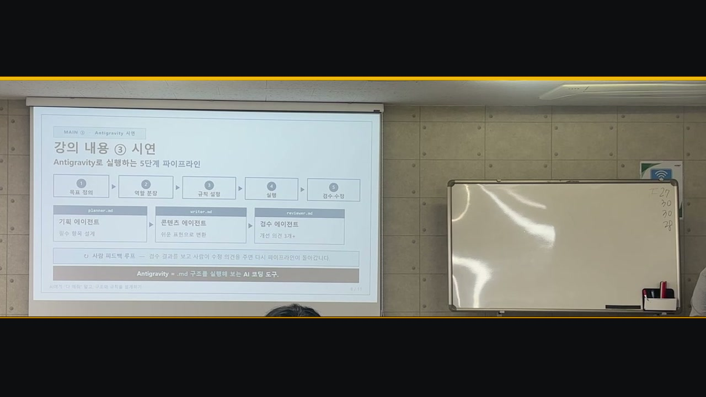

AI에게 잘 묻는 법에서, AI가 일할 구조를 설계하는 법으로
강의의 목표는 AI에게 긴 프롬프트로 모든 업무를 맡기는 방식과, 역할·규칙·실행 순서를 파일로 관리하는 하네스 엔지니어링의 차이를 이해시키는 것이었습니다.
최종 학습 목표 — AI를 단일 답변자가 아니라 역할별 에이전트 팀으로 바라보고,
.md 규칙 파일과 파이프라인으로 반복 가능한 업무 구조를 설계한다.
질문에서 시연까지 이어지는 참여형 흐름
- 문제 제기·학습 목표 안내큰 과제를 AI에 통째로 맡겼을 때 결과가 흔들리는 경험에서 출발
- 사전 지식 점검객관식 질문과 손들기로 참여를 유도하고 역할·규칙·검증 기준의 중요성으로 연결
- 개념 비교프롬프트 엔지니어링과 하네스 엔지니어링의 차이, 역할별 에이전트와 파일 구조 설명
- Antigravity 라이브 시연교육기획안 점검 체크리스트를 검수하고 사람이 반영 항목을 선택해 최종 HTML을 업데이트
- 사후 확인·질의응답핵심 내용을 다시 질문하고 도구·파일 구성·업무 적용 방식에 관한 현장 질문에 답변
기획 → 콘텐츠 → 검수 → 사람의 선택
- 기획 에이전트 — 교육기획안의 목표와 필수 항목을 구조화
- 콘텐츠 에이전트 — 기획 결과를 입력으로 받아 실제 체크리스트 콘텐츠 작성
- 검수 에이전트 — 평가 기준의 추상성 등 개선 의견을 제시
- 사람의 피드백 루프 — 검수 의견 중 반영할 항목을 직접 선택해 최종 결과물 보정

강의를 위해 만든 산출물
11장
강의 슬라이드
개념·구조·시연·클로징
3종
역할별 에이전트
기획·콘텐츠·검수
4–5분
시연 런북
Antigravity 실행 흐름
직접 제작한 파일
전달력의 강점과 다음 개선점
- 긍정 피드백 — 안정감과 신뢰감 있는 목소리, 선명한 전달력, 자연스러운 제스처, 레이저 포인터 활용
- 참여 설계 — 사전·사후 질문과 실제 시연이 집중과 이해를 높였다는 평가
- 개선점 — 일부 구간의 빠른 속도, 시선 분배, 시연 화면 글자 크기, 음량·톤 변화
질문 · 구조 설명 · 핵심 정리
AI 도구 사용법이 아니라 업무 구조를 가르치는 교육
복잡한 AI 에이전트 개념을 HRD 교육기획안 점검이라는 실무 사례로 번역하고, 참여형 질문과 라이브 시연으로 연결했습니다. 교육 운영 경험과 AI 업무 구조화 역량을 결합해 현업에서 바로 이해하고 적용할 수 있는 AI 교육 콘텐츠를 설계한 프로젝트입니다.